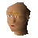

Civillian

| Config name | wantcat3 |
| NPC id | 787 |
| Combat level | hidden |
| Options | Talk-to |
| Wander range | 5 tiles from spawn |
| Area folder | area_ardougne_west |
| Defined in | scripts/areas/area_ardougne_west/configs/civilian.npc |
Civillian
A citizen of Ardougne.
Show all 4 spawns on the world map → Open in knowledge graph →
Locations
| Area | Coordinates | Level | Count | Map |
|---|---|---|---|---|
| Underground Pass | 2476, 3313 | 0 | 1 | view |
| Underground Pass | 2481, 3289 | 0 | 1 | view |
| Underground Pass | 2490, 3313 | 0 | 1 | view |
| Underground Pass | 2491, 3300 | 0 | 1 | view |
Dialogue
PlayerHello there.
CivillianI'm a bit busy to talk right now, sorry.
PlayerWhy? What are you doing?
CivillianTrying to kill these mice! What I really need is a cat!
PlayerI have a cat that I could sell.
CivillianYou don't say, is that it ?
PlayerSay hello to a real mouse killer!
CivillianHmmm, not bad, not bad at all. Looks like it's a lively one.
PlayerErm...kind of...
CivillianI don't have much in the way of money. I do have these!
CivillianThe dwarves bring them from the mine for us. Tell you what, I'll give you 100 Death Runes for the cat.
PlayerNope, I'm not parting for that.
CivillianWell, I'm not giving you anymore!
PlayerOk then, you've got a deal.
CivillianGreat! Hand over the cat and I'll give you the runes.
PlayerI have a cat...look!
CivillianHmmm...doesn't look like it's seen daylight in years. That's not going to catch any mice!
PlayerNo, you're right, you don't see many around.
CivillianGreat, thanks for that!
PlayerThat's ok, take care.
Referenced in scripts
scripts/areas/area_ardougne_west/scripts/civilian.rs2